Component List
Here are list of components in the physical computing kit.
You may hover your mouse cursor over the ℹ️ symbol to find out more information of the parts.
| Image | Name |
|---|---|
| 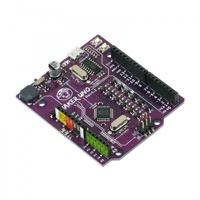 | Microcontroller (Maker Uno) ℹ️ |
| 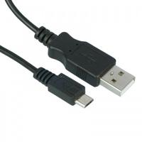 | Micro USB Cable ℹ️ |
| 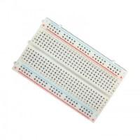 | Breadboard ℹ️ |
| 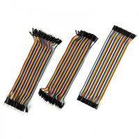 | Jumper Cable ℹ️ |
| 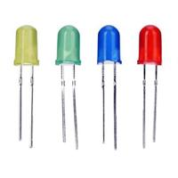 | Assorted LED ℹ️ |
| 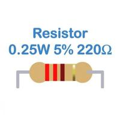 | Resistor 220 Ohm ℹ️ |
| 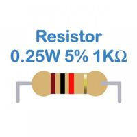 | Resistor 1K Ohm ℹ️ |
| 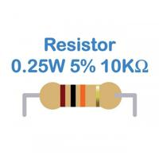 | Resistor 10K Ohm ℹ️ |
| 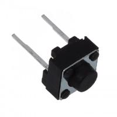 | Push Button Switch ℹ️ |
| 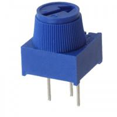 | Potentiometer ℹ️ |
| 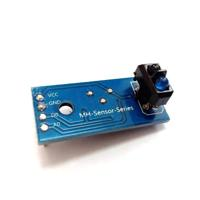 | IR Sensor ℹ️ |
| 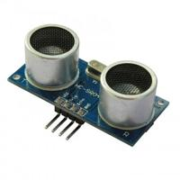 | Ultrasonic Sensor ℹ️ |
| 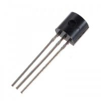 | Transistor ℹ️ |
| 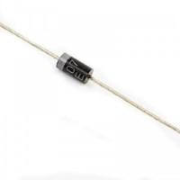 | Diode ℹ️ |
| 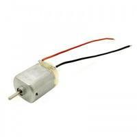 | Motor ℹ️ |
| 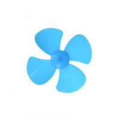 | Propeller ℹ️ |
Images were acquired from Cytron Technologies
You may buy their kit in this link.